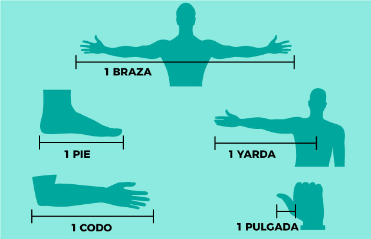

Es la unidad básica de longitud en los sistemas de medida que se utilizan en Estados Unidos y el Reino Unido. Una yarda equivale a 0,914 metros, 3 pies, 36 pulgadas, 0,00018 leguas y 0,00056 millas.
Es interesante conocer que a nivel internacional existen cuatro tipos diferentes de yardas. Así, por ejemplo, está la yarda americana, que es equivalente a 0,914401 metros; la yarda oficial inglesa, que es variable; la yarda industrial americana, que corresponde a 0,9144 metros, y la yarda oficiosa inglesa que es igual a 0,9143 metros.
